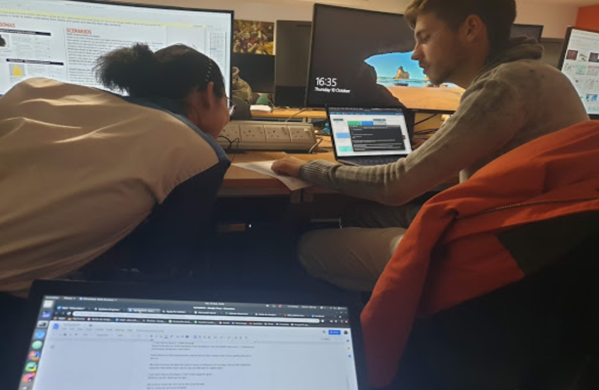
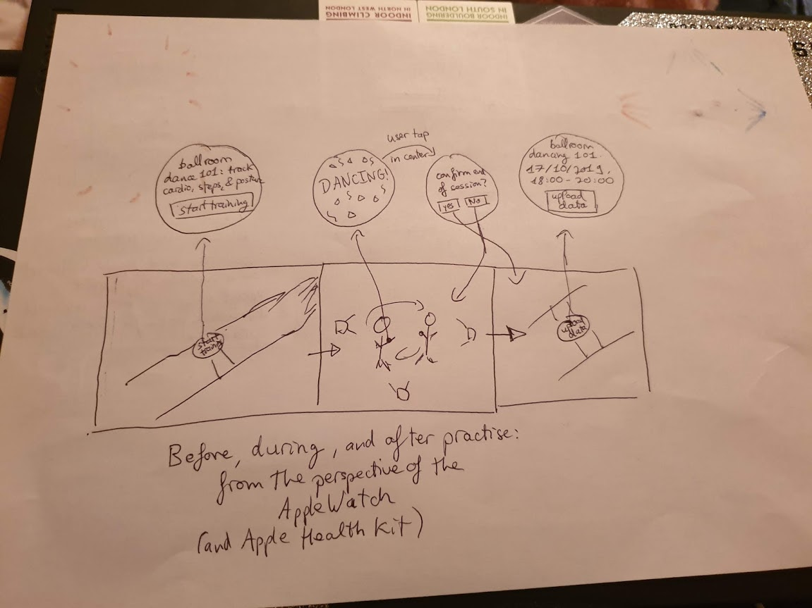
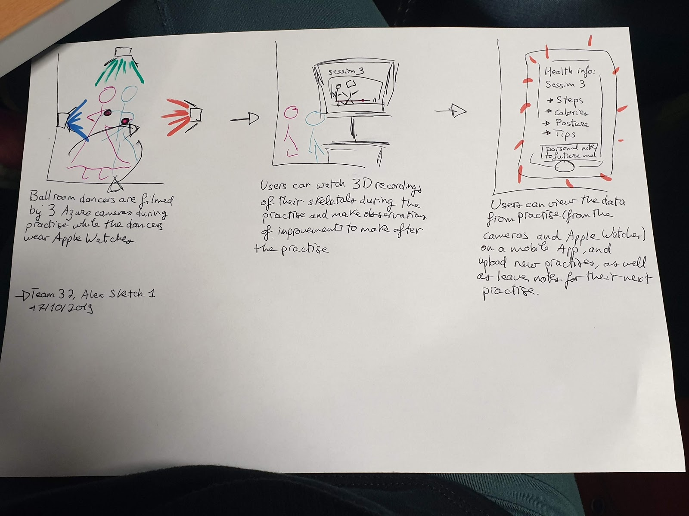
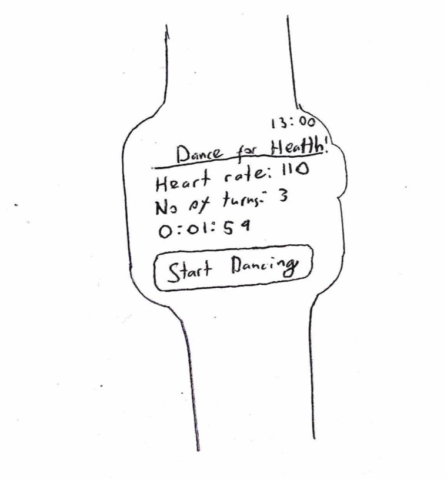

In order to make an abstraction from user data we gathered, we are using two ways; personas (type of user) and scenarios (context of user). Personas help us to bring “user profiles to life“ and scenarios “allows exploration and discussion of contexts, needs, and requirements” according to Interaction Design[2]. Personas represent the “desires, motivations, expectations, and needs of group of real users, thus helping the team obtain empathy with the different client profiles that might be found on the market.”[3]
Kevin Schwalsky
Kevin works in an office as an IT consultant; part of his job is to investigate new technologies: he is therefore quite experienced in tech and enjoys discovering new ways of using it. He cycles to work every day, and recently got hurt in an accident on the way to work: he injured his knee cap. He’s a beginner at dance but he hopes it will help in his rehabilitation journey back to full mobility.
He was thrilled to hear about this new concept and he hopes he can use the data he receives from using this product to track and improve both his health and his dancing. Before he goes to dance class he puts on his Apple Watch and the instructor sets up 3 cameras to capture his movements. He doesn’t mind that he’s being filmed by the cameras because he has been assured under GDPR that his data is safe.
Apart from that, the lesson carries on as usual: initially, it was a bit awkward telling his instructor he wanted to use this service but since then it has felt normal.
After the lessons he and his instructor upload the data to the app, and he receives a full health matrix and tips on how to improve his health, as well as a full assessment of his dancing, also with tips.
He is happy to see his progress over the past couple of weeks and feels like the mobility of his knee is improving.
He values that he gets empirical and unbiased data from a different source than his instructor, and he really has high hopes that it will help him in the long run.
Jade Xu
When Jade first encountered the idea of this service she was a bit reluctant: she thought it might be hard to use as she doesn’t consider herself tech savvy.
As a dance instructor and dancer since as long as she can remember, she never had an impartial way of rating her performance or that of her students, so she was still intrigued to try it out.
After her first experience with the product, she found it quite easy to use and realized that it generated a lot of crucial data to help her improve as a performer and teacher.
She realized quickly how useful it was, and now uses uses it for all of her classes: she lets some of her students that struggle more wear her Apple Watch to figure out what is wrong and let them know by the next lesson, and sets up the cameras to track them (if they consent).
The reports give her details about herself or her students that she would have otherwise completely missed, and she finds the health aspect to be a pleasant addition.
Overall, her experience has been surprisingly positive.
After the creation on two personas and scenarios, this allowed us to keep the users at all the phases of the iterative design process. We even drew their faces out on paper to bring them along with us to our meetings. This helped us to remember to always consider the users.
Team meetings with Jade and Kevin
Team 32 during our first persona creation meeting (including our schedule, template, and minutes)
We also made two story boards which show the situation when a user using our product.
 The following is a design of how the Apple Watch interface will look like:
